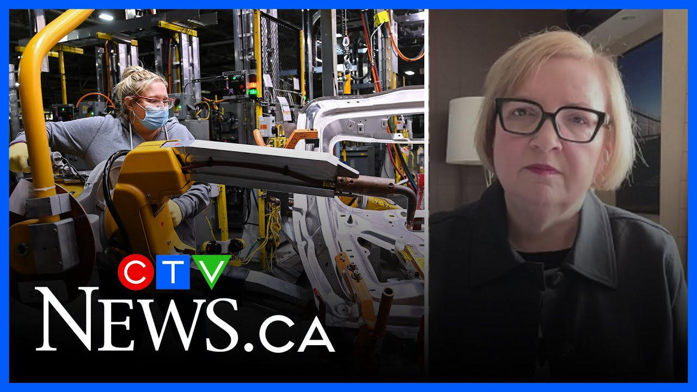

来B站一起耍【Global每日英语简报】
【Unifor主席对通用汽车奥沙瓦工厂削减班次表示“非常愤怒”】
Summary: Lana Payne, Unifor National President, reacts angrily to GM's decision to cut a shift at the Oshawa plant, warning of over 2,000 job losses and urging government action to protect Canadian workers.
摘要： Unifor全国主席Lana Payne对通用汽车削减奥沙瓦工厂班次的决定表示愤怒，警告此举将导致2000多个工作岗位流失，并呼吁政府采取行动保护加拿大工人。

⏱️ Estimated Reading Time: 8 min
And with me now is Lana Payne, Unifor National President.
现在和我在一起的是Unifor全国主席Lana Payne。
She's also on the Prime Minister's Council on Canada US relations.
她也是总理加美关系委员会的成员。
Lana, thanks for being here today.
Lana，感谢你今天来到这里。
Thanks for having me.
谢谢邀请我。
So, first off, your reaction to this decision?
那么，首先，你对这一决定的反应是什么？
Well, I'm good and angry if that helps.
嗯，我非常愤怒，如果这能说明问题的话。
Uh because I have to tell you this is uh this is exactly what we we saw coming uh in this trade war.
因为我要告诉你，这正是我们在这场贸易战中预料到的。
Uh we've been warning against it.
我们一直在警告这一点。
Uh we knew corporations uh like the automakers were putting in place uh tariff mitigation plans and what we're seeing today is a devastating announcement that impacts uh you know 750 of our members who work directly uh in the assembly plant and probably 1500 more uh in the supply chain.
我们知道像汽车制造商这样的公司正在制定关税缓解计划，而今天我们看到的是一则毁灭性的公告，直接影响750名在装配厂工作的会员，可能还有1500名在供应链中的工人。
Uh so yeah, it's it's not a good day and uh from from our perspective, we've got a little bit of time here to fight back before these layoffs uh come into effect.
所以，是的，这不是一个好日子，但从我们的角度来看，在裁员生效之前，我们还有一些时间可以反击。
Uh and my message will continue to be uh to General Motors uh that we believe this is uh shortsighted, premature, and minimally they should have given our prime minister an opportunity uh to sit down with Donald Trump and and try and figure out how it is we're going to work our way through this trade war before they make these kinds of devastating decisions for Canadian workers.
我将继续向通用汽车传达我们的观点，我们认为这是短视和仓促的，至少他们应该给我们的总理一个机会与特朗普坐下来，想办法如何在这场贸易战中找到出路，而不是为加拿大工人做出这种毁灭性的决定。
You mentioned layoffs.
你提到了裁员。
How many jobs could be at risk?
有多少工作岗位可能面临风险？
Oh, it's uh it's well over 2,000 jobs that we're looking at here.
哦，我们在这里讨论的是超过2000个工作岗位。
750 in the plant and 1,500 in in auto parts.
750个在工厂，1500个在汽车零部件行业。
Uh for sure.
确实如此。
So, it's uh you know, this is why we say it's it has a big impact when you lose one shift in one of these one of these plants.
所以，这就是为什么我们说在这些工厂中失去一个班次会产生巨大影响。
Uh it's the workers who directly are building uh these pickup trucks and then are they're all the the workers that we have in the supply chain building parts.
直接建造这些皮卡的工人，以及供应链中制造零部件的所有工人都会受到影响。
Uh so it's it's devastating for the community uh and the broader region of of Ashawa today.
因此，这对社区和奥沙瓦更广泛的地区来说是毁灭性的。
Now I understand that you have been in touch with Mark Carney's office about this.
我了解到你已经与马克·卡尼的办公室就此进行了联系。
What was the response?
他们的回应是什么？
Basically I wanted to make sure that they got a heads up that this was coming uh and and that what our expectations were.
基本上，我想确保他们提前知道这件事会发生，以及我们的期望是什么。
Uh I'll let the prime minister speak for himself, but the reality is is that you know the these companies operate in Canada.
我会让总理自己发言，但现实是这些公司在加拿大运营。
uh they they they operate in in the fact that Canadians buy a lot of vehicles and in the in the case of General Motors, they sold 300,000 in Canada last year.
加拿大人购买大量车辆，而通用汽车去年在加拿大销售了30万辆。
Uh many of them and most of them import it uh from the United States.
其中许多甚至大多数是从美国进口的。
So we expect a a company who sells in Canada to build in Canada and what we've just seen is a reduction of their footprint.
因此，我们期望在加拿大销售的公司也在加拿大生产，而我们刚刚看到的是他们的业务缩减。
And I would remind people that we also had 500 people at our Cammy Assembly plant, also General Motors employees, who who received layoff notices just a couple of weeks ago.
我还要提醒大家，我们的Cammy装配厂也有500名通用汽车员工在几周前收到了裁员通知。
Uh so this is devastating.
所以这是毁灭性的。
Uh we need our prime minister and and the premier of Ontario obviously to work together to send a message to these automakers that this is just simply unacceptable.
我们需要总理和安大略省省长共同努力，向这些汽车制造商传达一个信息，即这是完全不可接受的。
uh and and also to look at the the tariff exemptions that we gave companies like General Motors in terms of our response to Donald Trump's tariffs.
同时还要审视我们为回应特朗普关税而给予通用汽车等公司的关税豁免。
Um and and they had an exemption from that as long as they kept production in Canada.
只要他们保持加拿大生产，他们就可以享受豁免。
So now uh you know uh the federal government's going to have to look at what that exemption looks like going forward.
所以现在联邦政府将不得不审视未来的豁免政策。
And uh I would say the other thing I think it's important uh for the prime minister to do is to pull these automakers together and say look we have expectations of you in this country.
我认为总理还需要做的一件事是将这些汽车制造商召集起来，告诉他们我们对他们在这个国家有期望。
We expect you to build here uh if you want to sell here and uh and have that kind of meeting and make sure that they're getting the message uh from from our prime minister that this is just unacceptable.
我们希望你们在这里生产，如果你们想在这里销售，并确保他们从总理那里得到信息，即这是不可接受的。
Is the union in any position to fight back against this?
工会是否有能力反击这一决定？
Oh yeah.
哦，是的。
every single day for the uh for the time that we have uh because we do have some time here.
在我们拥有的每一天时间里，因为我们确实还有一些时间。
Uh the layoffs don't take effect until later this fall.
裁员要到今年晚些时候才会生效。
Uh so every day between now and then, we will be fighting hard in all the ways that we can uh including uh continuing uh to work uh to convince General Motors that this is the wrong decision.
所以从现在到那时，我们每一天都会尽一切努力，包括继续努力说服通用汽车这是一个错误的决定。
Uh that we expect them to have a robust footprint in Canada.
我们希望他们在加拿大有强大的业务存在。
We expect them to employ uh Canadians uh for generations to come because of the simple reason that Canadians support General Motors by buying their vehicles.
我们希望他们未来几代人都雇佣加拿大人，因为加拿大人通过购买他们的车辆来支持通用汽车。
And I've said to these automakers, they need to be very careful.
我已经告诉这些汽车制造商，他们需要非常小心。
Canadians are in a mood right now.
加拿大人现在情绪高涨。
They are doing everything organically to protect Canadian jobs.
他们正在自发地采取一切措施保护加拿大的工作岗位。
They're buying Canadian.
他们购买加拿大产品。
They're doing it all.
他们正在全力以赴。
and uh you know they're not going to look kindly on corporations that think that they can appease Donald Trump by selling off our jobs uh in the fashion that we're seeing here today.
他们不会对那些认为可以通过牺牲我们的工作岗位来安抚特朗普的公司有好感。
All right, Lana Payne, uniform national president and also on the prime minister's council on trade relations with the US.
好的，Lana Payne，Unifor全国主席，也是总理加美贸易关系委员会的成员。
Thank you very much for being here today and sharing your insights.
非常感谢你今天来到这里并分享你的见解。
We appreciate it, Lana.
我们非常感谢，Lana。